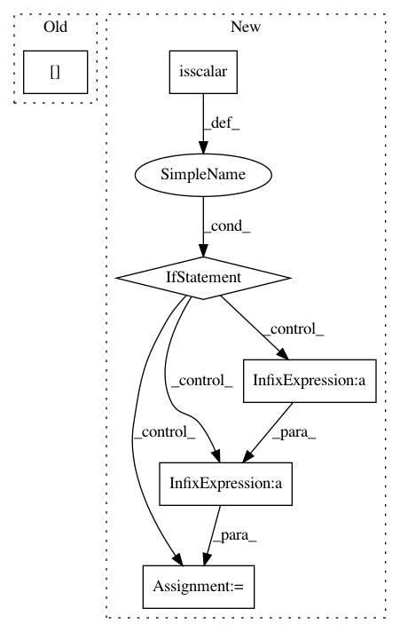

9748b1dc29f7a5bcfb1eef8f3ecbb1e508ae1ca5,prody/dynamics/signature.py,,showAverageCrossCorr,#Any#Any#Any#,211
Before Change
if not "origin" in kwargs:
kwargs["origin"] = "lower"
show = plt.imshow(matrixData, *args, **kwargs), plt.colorbar()
plt.axis([arange[0]+0.5, arange[-1]+1.5, arange[0]+0.5, arange[-1]+1.5])
title_str = ", mode "+str(modeIndex+1)
if plotStd:
plt.title("Std - Cross-correlations"+title_str, size=14)
After Change
kwargs["origin"] = "lower"
cmap = kwargs.pop("cmap", "jet")
show = plt.imshow(matrixData, cmap=cmap, *args, **kwargs), plt.colorbar()
if np.isscalar(modeIndex):
title_str = ", mode "+str(modeIndex+1)
else:
modeIndexStr = ",".join([str(x+1) for x in modeIndex])
if len(modeIndexStr) > 8:
title_str = ", "+str(len(modeIndex))+" modes "+modeIndexStr[:5]+"..."
else:
title_str = ", modes "+modeIndexStr
// title_str = ", "+str(len(modeIndex))+" modes"
if plotStd:
plt.title("Std - Cross-correlations"+title_str, size=14)
else:
plt.title("Avg - Cross-correlations"+title_str, size=14)
In pattern: SUPERPATTERN
Frequency: 3
Non-data size: 6
Instances
Project Name: prody/ProDy
Commit Name: 9748b1dc29f7a5bcfb1eef8f3ecbb1e508ae1ca5
Time: 2018-02-16
Author: hongchun@pitt.edu
File Name: prody/dynamics/signature.py
Class Name:
Method Name: showAverageCrossCorr
Project Name: prody/ProDy
Commit Name: 9748b1dc29f7a5bcfb1eef8f3ecbb1e508ae1ca5
Time: 2018-02-16
Author: hongchun@pitt.edu
File Name: prody/dynamics/signature.py
Class Name:
Method Name: showMatrixAverageCrossCorr
Project Name: scikit-optimize/scikit-optimize
Commit Name: 4af750bec058da0cf5d4a3245a443549b9d7fd33
Time: 2016-04-05
Author: manojkumarsivaraj334@gmail.com
File Name: skopt/dummy_opt.py
Class Name:
Method Name: dummy_minimize